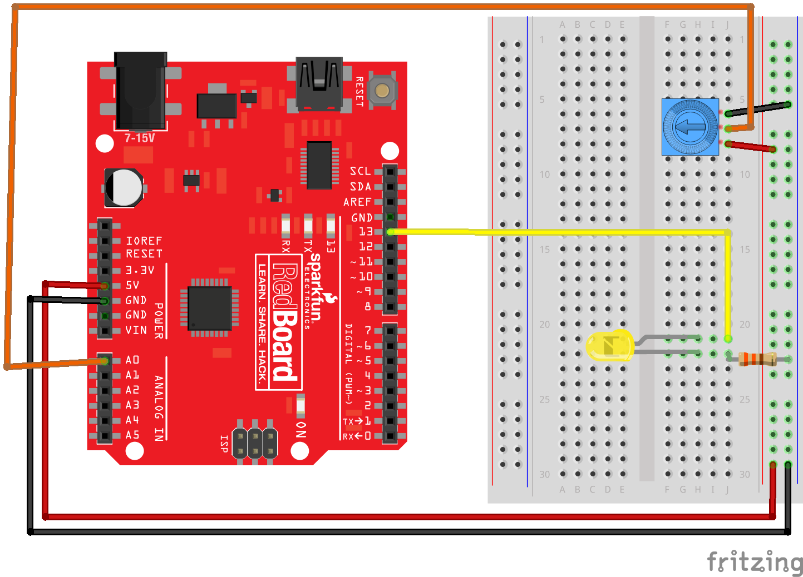
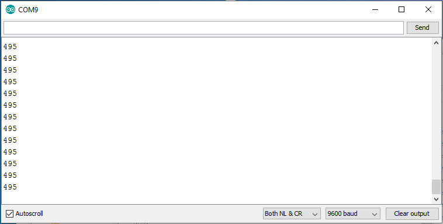
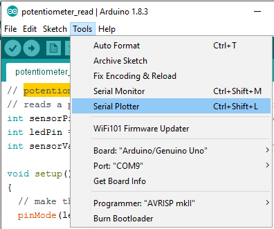
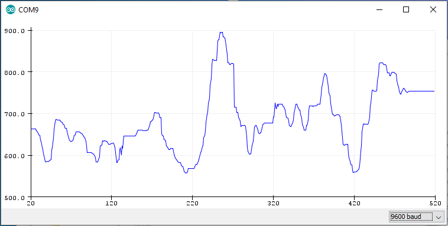

In this post, you will see how to use Python to communicate with an Arduino and read a sensor. In particular, the sensor we'll use is a potentiometer. The potentiometer will connect to an Arduino microcontroller and the Arduino will communicate with a Python script using the PySerial package. Python running on our computer will read the sensor data, then we will use Matplotlib to plot the sensor output. This is going to be a fun project. Let's dive in!
- Collect the hardware
- Create a virtual environment and install PySerial
- Download the Arduino IDE
- Wire the potentiometer and an LED to the Arduino
- Connect the Arduino to the computer and check the COM port
- "Blink" the Arduino to confirm it is working
- Upload the potentiometer.ino sketch to the Arduino
- Twist the little blue potentiometer to turn the LED connected to the Arduino on and off
- Use the Python REPL to read the potentiometer.
- Write a Python script to print out the potentiometer readings
- Write a Python script to record the potentiometer readings and plot the readings over time
- Summary
- Going further
Collect the hardware
In this project, we are going to use a couple of pieces of hardware. Below is the list of hardware needed to complete the project:
| Component | Item and Link |
|---|---|
| Arduino | SparkFun RedBoard - Programmed with Arduino |
| Potentiometer | https://www.sparkfun.com/products/9806 |
| Jumper Wires | Jumper Wires Premium 6" M/M Pack of 10 |
| LED | LED Rainbow Pack - 5mm PTH |
| 330 Ohm Resistor | Resistor 330 Ohm ⅙ Watt PTH - 20 pack |
| Breadboard | Breadboard - Self-Adhesive (White) |
| USB cable | SparkFun USB Mini-B Cable - 6 Foot |
Create a virtual environment and install PySerial
To complete this Python project, it is best practice to use a virtual environment. I have the Anaconda distribution of Python installed on my Windows 10 machine (see this post on how to install Anaconda on Windows).

In a previous post, we reviewed how to create a new virtual environment called (arduino). We'll follow the same process here. Open the Anaconda Prompt and use the command below to create the virtual environment.
> conda create -y -n arduino python=3.8
Before we start this project, we will activate the (arduino) virtual environment and ensure that the PySerial package is installed.
> conda activate arduino
You know you are in the arduino virtual environment when (arduino) is in parenthesis at the start of the prompt:
(arduino) >
To communicate with the Arduino using Python over a serial line, we need to have the PySerial package installed. Install PySerial from the Anaconda Prompt using the command conda install pyserial.
(arduino) > conda install pyserial
To confirm that PySerial is installed in the (arduino) virtual environment, enter the Python REPL and try to import the PySerial package. Then call the .__version__ attribute on the serial package. Note that even though the package is called PySerial the import command is import serial.
(arduino) > python
>>> import serial
>>> serial.__version__
'3.4'
>>> exit()
(arduino) >
Download the Arduino IDE
We need to upload code to our Arduino in order to communicate with our Arduino using Python. Therefore, the next step is to dowload and install the Arduino IDE (Intgrated Development Environment)
As shown in a previous post, download and install the Arduino IDE found at the link below.
If you are working on a company or school computer that won't allow you to install software, choose the Windows ZIP file for non-admin install option.

Wire the potentiometer and an LED to the Arduino
Take out the little blue potentiometer, an LED (any color), a 330 Ohm resistor, five jumper wires (2x red, 2x black, 1x yellow, 1x orange), the Arduino, and the white breadboard. Connect the potentiometer, LED, resistor, and colored jumper wires as shown below. Note the LED has two different sized "legs." Ensure the LED is wired in the correct orientation. Current can only flow in one direction through an LED. It does not matter which outside leg of the potentiometer goes to 5V and which outside leg of the potentiometer goes to ground. However, the center leg of the potentiometer must be connected to pin A0 on the Arduino.
- outside potentiometer leg → 5V
- middle potentiometer leg → A0 on Arduino
- outside potentiometer leg → ground
- short LED leg → resistor → ground
- long LED leg → Pin 13 on Arduino
Also see the SparkFun Inventor’s kit online guide:

Connect the Arduino to the computer and check the COM port
In this step, we are going to connect the Arduino to the computer and determine which COM port it is connected to.
Connect the Arduino to the computer using a USB cable. On SparkFun Redboards (a type of Arduino), the cable needs to be a USB 2.0 type A to Mini-B cable. One end of the cable looks like a regular USB cable. Connect that end to the computer. The other end of the cable has a small connector that sort of looks like a phone charging cable, but a little different. Connect this smaller end of the cable to the Arduino.
Now we need to determine which COM Port the Arduino is connected to. Later, when we upload code to the Arduino we will need to know which COM Port the Arduino is connected to.
We can use the Windows Device Manager to determine which serial port the Arduino is connected to. On my Windows 10 laptop, the Arduino is usually connected to port COM15. You can find the port number by looking in the Ports (COM & LPT) category of the Windows Device Manager. Look for something like USB Serial Port (COM15) in the Ports (COM & LPT) menu. It is the COM# that you are looking for. Remember, your COM# will probably not be COM15.


"Blink" the Arduino to confirm it is working
In the next step, we are going to upload the Blink.ino sketch to the Arduino and make sure the sketch uploads and the Arduino blinks. A sketch is an Arduino program.
Double-click the Arduino.exe program. Open the Arduino Blink.ino sketch by going to: File → Examples → 01.Basics → Blink

Before we upload the blink.ino sketch to the Arduino, ensure that the Port and the Board type are set correctly in the Arduino IDE. In the Arduino IDE Tools menu, select the following:
- Tools → Port → COM4 (or whichever port the Arduino is connected to, found with the Windows Device Manager)
- Tools → Board → Arduino / Genuino Uno
In the Arduino IDE Window that contains the Blink.ino sketch, click the checkmark to Verify then click the arrow to Upload.


Once the upload is complete, the Arduino and LED should blink on and off.
If you don't see the Arduino and LED blinking, you need to do some troubleshooting. Check the COM Port or try unplugging and re-plugging in the Arduino.
Upload the potentiometer.ino sketch to the Arduino
In this step, we are going to write a new Arduino sketch called potentiometer.ino and upload it to the Arduino.
Use the Arduino IDE to create a new sketch by going to File → New. This opens up a new Arduino IDE window. Save the new sketch as potentiometer.ino by going to File → Save. Copy the code below into the potentiometer.ino sketch. Replace all of the text in the sketch with the code below.
// potentiometer.ino
// reads a potentiometer sensor and sends the reading over serial
int sensorPin = A0; // the potentiometer is connected to analog pin 0
int ledPin = 13; // the LED is connected to digital pin 13
int sensorValue; // an integer variable to store the potentiometer reading
void setup() { // this function runs once when the sketch starts up
pinMode (ledPin, OUTPUT);
// initialize serial communication :
Serial.begin(9600);
}
void loop() { // this loop runs repeatedly after setup() finishes
sensorValue = analogRead(sensorPin); // read the sensor
Serial.println(sensorValue); // output reading to the serial line
if (sensorValue < 500){
digitalWrite(ledPin , LOW );} // turn the LED off
else {
digitalWrite(ledPin , HIGH );} // keep the LED on
delay (100); // Pause in milliseconds before next reading
}
The potentiometer.ino sketch above reads the value off of the potentiometer and sends the potentiometer reading over the serial line. In the next part of the sketch, the potentiometer reading is compared to 500. If the potentiometer reading is greater than 500, the LED turns on. If the potentiometer reading is less than 500, the LED turns off.
After the potentiometer.ino sketch is saved, the sketch needs to be uploaded onto the Arduino. In the Arduino IDE window that contains the potentiometer potentiometer.ino sketch, click the checkmark to Verify then click the arrow to Upload.

Twist the little blue potentiometer to turn the LED connected to the Arduino on and off
We will now check that the Arduino sketch and potentiometer are functioning correctly. We can check in three different ways:
- The first check is to see if the LED turns on and off when the potentiometer is dialed back and forth.
- The second check is to see the potentiometer reading in the Arduino Serial Monitor.
- The third check is to see the potentiometer reading in the Arduino Serial Plotter.
Check if the LED turns on and off
After the potentiometer.ino sketch is uploaded on the Arduino, twist the small blue potentiometer dial back and forth and watch the LED turn on and off. The on/off point should be about halfway through the little blue potentiometer’s rotation. If the LED does not turn on and off, double-check your wiring and try uploading the potentiometer.ino sketch again.
View the potentiometer reading in the Arduino Serial Monitor
In the Arduino IDE, open the Arduino Serial Monitor by selecting Tools \(\rightarrow\) Serial Monitor.
If the potentiometer.ino sketch is working properly, you will see numbers scrolling down the Arduino Serial Monitor. Twist the little blue potentiometer back and forth and watch the numbers scrolling down the Arduino Serial Monitor change.

Now close the Serial Monitor. The Arduino Serial Monitor and Arduino Serial Plotter can not communicate with the Arduino at the same time.
Be careful: The Arduino Serial Monitor and the Arduino Serial Plotter can't be open at the same time.
View the potentiometer reading in the Arduino Serial Plotter
In the Arduino IDE, open the Arduino Serial Plotter by selecting Tools → Serial Plotter.

You should see a plot with a moving line in the Arduino Serial Plotter. Twist the little blue potentiometer back and forth and observe the line on the plot move up and down.

Once you can successfully move the plotting line up and down in the Serial Plotter, close the Serial Plotter Window. If the Serial Plotter isn't working correctly, make sure the COM port is set correctly in the Arduino IDE. The Arduino Serial Monitor and Arduino Serial Plotter can not be open at the same time. Both the Arduino Serial Monitor and the Arduino Serial Plotter need to be closed before Python can communicate with the Arduino.
The Arduino Serial Monitor and Arduino Serial Plotter both need to be closed before Python can communicate with the Arduino.
After you can successfully:
- turn the Arduino LED on and off by twisting the little blue potentiometer
- see numbers change in the Arduino Serial Monitor when the potentiometer is twisted
- see the plot line move up and down in the Serial Plotter when the potentiometer is twisted
It is time to use Python to read and record the potentiometer reading.
Use the Python REPL to read the potentiometer.
Open the Anaconda Prompt and activate the (arduino) virtual environment (if it is not currently active). Then start the Python REPL by typing python at the prompt.
Type the following commands below to read the potentiometer connected to the Arduino. Note the arrow symbols > and >>> should not be typed. The arrow symbols > and >>> are just shown to indicate the prompt. Make sure to change the COM Port from 'COM4' to the Port number you found in the Windows Device Manager. The command ser.readline() reads the incoming data from the serial line. Note that the data looks kind of funny, not like the numbers we saw in the Arduino Serial Monitor. Twist the potentiometer and run ser.readline() again. Observe how the output changes.
> conda activate arduino
(arduino) > python
Python 3.7.1 (default, Dec 10 2018, 22:54:23) [MSC v.1915 64 bit (AMD64)] :: Anaconda, Inc. on win32
Type "help", "copyright", "credits" or "license" for more information.
>>> import serial
>>> ser = serial.Serial('COM4', 9800, timeout=1)
>>> ser.readline()
b'481\r\n'
>>> ser.readline()
b'589\r\n'
>>> ser.close()
>>> exit()
(arduino) >
After you take a couple of readings, make sure to close the serial port with the command ser.close() . If the serial port is not closed, there may be a problem the next time you try to open the port. This problem can usually be remedied by unplugging then replugging in the Arudino.
If the serial port is not closed, there may be a problem the next time you try to open the port.
If you have trouble, make sure the Arduino Serial Monitor is closed before you run the commands at the Anaconda Prompt. If the Arduino Serial Monitor is open, you can't communicate with the Arduino with the Anaconda Prompt.
The data coming from the serial line looks kind of funny:
b'481\r\n'
Let's investigate what kind of data type is returned by the ser.readline() command.
Use the Anaconda Prompt to open the Python REPL and try the following commands. Leave the Python REPL open after running the commands. Remember to change the COM Port from 'COM4' to the Port number you found in the Windows Device Manager.
(arduino) > python
Python 3.7.1 (default, Dec 10 2018, 22:54:23) [MSC v.1915 64 bit (AMD64)] :: Anaconda, Inc. on win32
Type "help", "copyright", "credits" or "license" for more information.
>>> import serial
>>> ser = serial.Serial('COM4', 9800, timeout=1)
>>> line = ser.readline()
>>> type(line)
<class 'bytes'>
>>> ser.close()
When we store the line coming in from the Arduino, we aren't storing an int, a float, or a string. The ser.readline() method returns a byte object. The "byte object" can be converted to a regular Python string using the .decode() method.
>>> import serial
>>> ser = serial.Serial('COM4', 9800, timeout=1)
>>> line = ser.readline()
>>> line
b'481\r\n'
>>> type(line)
<class 'bytes'>
>>> string = line.decode()
>>> string
'481\r\n'
>>> type(string)
<class 'str'>
OK, now we have a Python string, but what about the \r\n at the end? These are the return and new line characters. \r\n are sent by the Arduino because the potentiometer.ino sketch used the Serial.println() function, which prints a new line each time the data is printed out. Not to worry, \r\n can be stripped off the string object with the Python's .strip() method. Then let's convert the "stripped" string to an integer, using Python's int() function. Make sure to close the serial line with the ser.close() method before you exit() the Python REPL.
>>> string
'481\r\n'
>>> stripped_string = string.strip()
>>> stripped_string
'481'
>>> num_int = int(stripped_string)
>>> num_int
481
>>> type(num_int)
<class 'int'>
>>> ser.close()
>>> exit()
(arduino) >
Let's sum up the data type conversions above. Starting from the data that comes in from the Arduino that is a byte to finally ending up with an integer:
ser.readline()returns a byte string:b'481\r\n'.decode()converts the byte string to a Python string:'481\r\n'.strip()removes the\r\ncharacters from the end of the Python string:'481'int()converts the Python string to an integer:481
Write a Python script to print out the potentiometer readings
Now let's write a Python script that prints out the potentiometer readings.
Create a new Python script called potentiometer.py. Include the code below in the script. Make sure to modify the COM# from 'COM4' to the Port you found in the Windows Device Manager.
# potentiometer.py
import serial
import time
# make sure the 'COM#' is set according the Windows Device Manager
ser = serial.Serial('COM4', 9800, timeout=1)
time.sleep(2)
for i in range(50):
line = ser.readline() # read a byte
if line:
string = line.decode() # convert the byte string to a unicode string
num = int(string) # convert the unicode string to an int
print(num)
ser.close()
Run the potentiometer.py script and twist the little blue potentiometer back and forth. You should see numbers running down the terminal. The numbers change as you dial the potentiometer back and forth.
Write a Python script to record the potentiometer readings and plot the readings over time
Now let's write a Python script that records the potentiometer readings and plots the potentiometer readings over time.
We'll plot the potentiometer reading with Matplotlib. Matplotlib is a Python package used to build plots. Before we can use Matplotlib, Matplotlib needs to be installed into our (arduino) virtual environment. We'll use the Anaconda Prompt to install Matplotlib. Make sure you are in the (arduino) virtual environment when you run the install command.
(arduino) > conda install matplotlib
We can confirm that Matplotlib is installed using the Python REPL:
(arduino) > python
Python 3.7.1 (default, Dec 10 2018, 22:54:23) [MSC v.1915 64 bit (AMD64)] :: Anaconda, Inc. on win32
Type "help", "copyright", "credits" or "license" for more information.
>>> import matplotlib
>>> matplotlib.__version__
'3.3.4'
>>> exit()
(arduino) >
Now that Matplotlib is installed, create a new Python script called potentiometer_plot.py. Include the code below in the potentiometer_plot.py script. Again, remember to modify the COM# from 'COM4' to the Port you found in the Windows Device Manager.
# potentiometer_plot.py
import serial
import time
import matplotlib.pyplot as plt
# make sure the 'COM#' is set according the Windows Device Manager
ser = serial.Serial('COM4', 9800, timeout=1)
time.sleep(2)
data = []
for i in range(50):
line = ser.readline() # read a byte string
if line:
string = line.decode() # convert the byte string to a unicode string
num = int(string) # convert the unicode string to an int
print(num)
data.append(num) # add int to data list
ser.close()
# build the plot
plt.plot(data)
plt.xlabel('Time')
plt.ylabel('Potentiometer Reading')
plt.title('Potentiometer Reading vs. Time')
plt.show()
Run the potentiometer.py script and turn the blue potentiometer back and forth. You will see numbers running down the screen and then a plot pops up that looks kind of like the plot below. Note the line on your plot will look different, but the title and axis labels should look the same.
Fantastic! We used Python to read a sensor! When the Python script is run and the potentiometer is dialed back and forth, we see a plot of the potentiometer reading over time.
Summary
In this post, we used Python to read a potentiometer. We used a bunch of technologies to complete this project.
- Arduino Hardware: we wired a potentiometer and an LED to an Arduino using jumper wires, a resistor, and a breadboard.
- Arduino IDE: we used the Arduino IDE to upload code to the Arduino.
- Arduino sketches: we used a couple of Arduino sketches (Arduino programs). Arduino sketches end in the
.inofile extension. - Arduino Serial Monitor and Arduino Serial Plotter: we used the Arduino Serial Monitor and Arduino Serial Plotter to see if the potentiometer reading was sent over the serial line.
- Windows Device Manager: We used the Windows Device Manager to see which COM Port the Arduino was connected to.
- Anaconda Prompt: We used the Anaconda Prompt to create a virtual environment and install Python packages.
- Virtual Environments: We created a virtual environment with the Anaconda Prompt to house all the Python packages we used in the project.
- Python REPL: We used the Python REPL (the Python Prompt) to confirm Python packages were installed correctly and run quick commands to confirm Python could communicate with the Arduino.
- Python Scripts: We wrote a couple of Python scripts. Python scripts end in the
.pyfile extension and contain Python code. The Python scripts recorded the potentiometer readings. - PySerial: The PySerial Python package was used to read data coming from the Arduino.
- Matplotlib: The Matplotlib Python package was used to plot the data recorded by the Python script.
Going further
This project can be extended in several ways. For example, a different type of sensor could replace the potentiometer. A light sensor, temperature sensor, or pressure sensor could be used instead of a potentiometer. Two or three sensors could be connected to the Arduino at the same time as well. The plotting script can also be extended. The script could ask the user for the amount of time they wanted to record data. Or the script could produce an animated plot of the data mimicking the Arduino Serial Monitor.